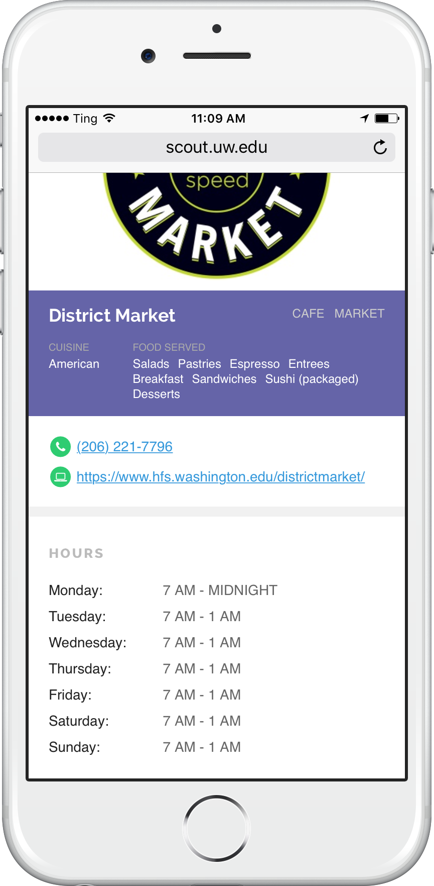

This fall, Scout UW will revolutionize how you find the stuff you need on campus, when you need it.
Looking for:
- A place to study? Scout helps you browse study spots without having to walk all over campus.
- Food? Discover new places to eat on campus based on cuisine, location and more.
- A laptop? Digital camera? Scout can help you find tools that are available to you.
Scout UW has you covered.

Scout UW will help you find resources on all three UW campuses.
If you’re looking for study spaces this summer, use SpaceScout while we put the finishing touches on Scout UW.